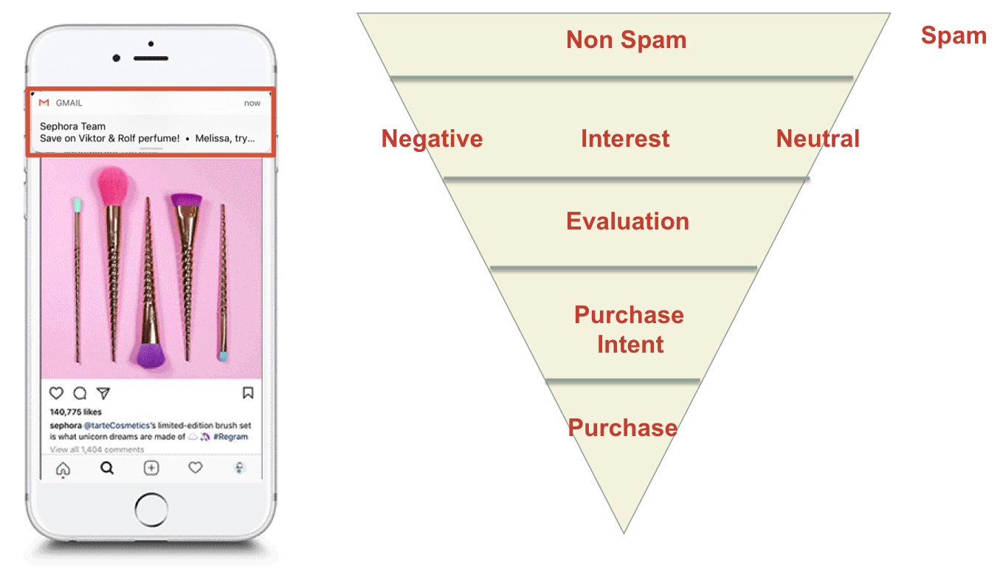
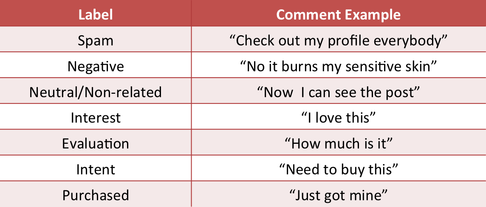
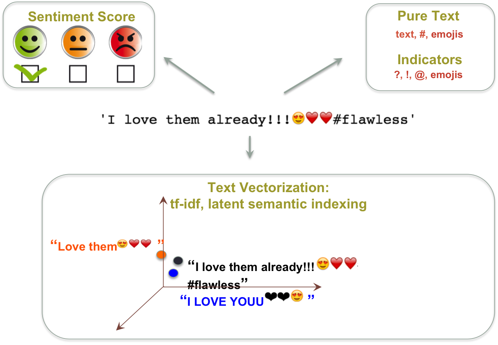
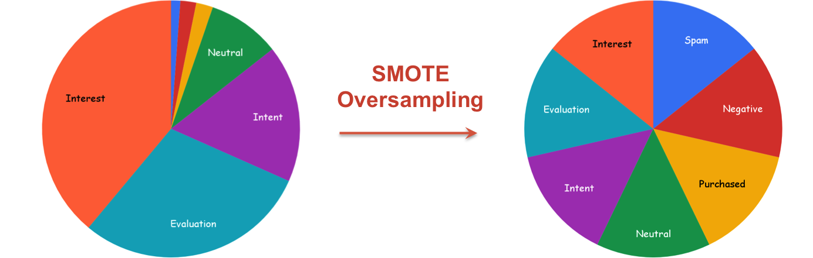
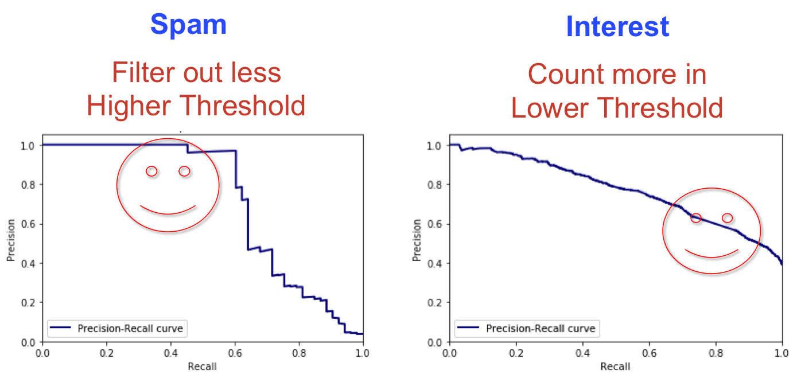
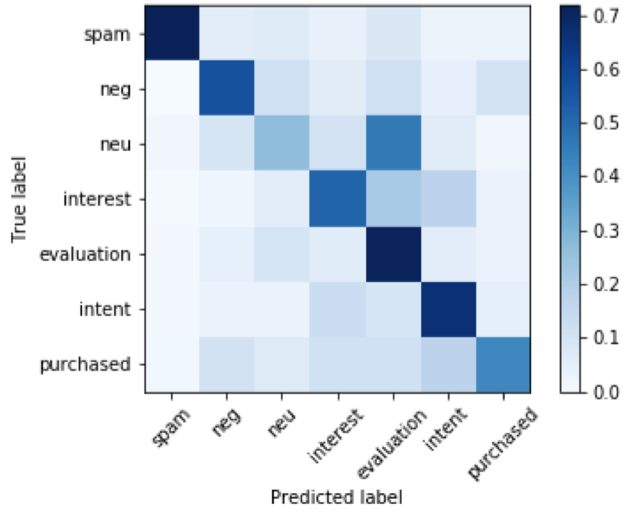

Intro
Nowadays, millions of brands and retailers promote product via social media outlets, such as Instagram and subscription emails, with the goal that consumers will ultimately make a purchase. However, whether social medica advertising actually translates to product sales is unclear. Social media posts may only serve to raise awareness of the products and when users subscribe for emails about products, the emails either get buried and lost amongst other promotions, or filtered as spam.
To combat this customer attrition problem, CherryPick.ai provides actionable insights to retailers and brands based on potential customers' Instagram comments to motivate consumer purchases.
CherryPick.ai helps retailers drive sales by moving customers through a marketing funnel. When a non-spam comment is made for a product on an Instagram promotion post, it can vary in the degree of consumer interest towards a given proguct: be either negative, neutral, or shows interest in the product. If the consumer shows interest in a product, they may first exhibit evalution of the product before an intent to purchase the product. CherryPick.ai sends targeted notifications to consumers if there is high purchase intent to push customers into the final step in the marketing funnel, where the consumer ultimately purchases the product.
 The marketing funnel.Currently, CherryPick.ai manually assesses Instagram comments to determine a consumer's purchase intent. This process is laborious, expensive and impossible to achieve real-time analysis. As a data science consultant for CherryPick.ai, I built a natural language classifier to achieve real-time identification of purchase intent, which will be implemented into their platform. My project, which I describe in more detail in this blog, will ultimately save CherryPick.ai and their customers a lot of capital.
Try It Out!!!
To give you an idea of what this natural language classifier can do, here is an interactive example to play with...
Type in an Instagram comment that you would normally do under a product promotion post and see how we categorize your mentality.
Hint: use emojis as you wish, like ❤️😍!
How does the magic happen?
CherryPick.ai provided a database containing over 200K comments, of which 30K were labeled according to 7 marketing funnel stages (AKA "classes): negative, neutral, interest, evaluation, purchase intent, purchased and spam. Here I show an example of each class.
 Example of labeled comments.Because these different classes are part of a funnel, the classes are naturally highly imbalanced, where purchase intent is infrequent. I’ll talk about how I dealt with this issue later in the blog in the later section.
Natural Language Processing
Text is only useful if you can extract features from it. For the 200K comments, I engineered 58 features to provide richer context to the comments from a Machine Learning perspective. To start, I parsed out the elements in each comment. Most likely, a comment would contain text, #hashtag, @username, emojis, like this:
I love them already!!!😍❤️❤️#flawless @beyonce
The first task is to extract all of the different elements in the comment. For example, "@" and "?" are important because they might be strong indicators for the Evaluation stage; 😍😍😍😍 shows a stronger interest than only 😍. The re and emoji Python packages and Natural Language Toolkit (NLTK) basic functions help with this task.
In order to determine a consumer’s attitude toward a product from a comment, I employed Vader from the NLTK package to determine the sentiment of each comment. Vader provides a sentiment score, which essentially indicates whether the comment demonstrates positive, neutral or negative sentiment. For this comment example, it is absolutely positive.
To identify unique words in each comment, I used term frequency-inverse document frequency (tf-idf) to bring comments into a vector space with emphasis on the unique words in each comment. To reduce the resulting 10K vector space of unique words from high dimensionality, I used a semantics-based dimension reduction technique called Latent Semantic Indexing (LSI). Now each comment is represented as a vectorized point in this space, where, smilar comments are clustered close together while comments with big differences in semantics are far apart. For example, the two closest neighbors of the example comments are: "Love them😍❤️❤️" and "'I LOVE YOUU❤️❤️😍".
 Feature matrix of the example comment.The Classifier
Having constructed the feature matrix for each comment, I noticed that it is a mixture of numerical and categorical features which need to be classified. For this challenging task, I chose the random forest classifier, which is known for its ability to deal with mixed feature types. Using the subset of the data that is labeled, I trained a random forest model to classify the comments into 7 categories using Scikit Learn.
Random forest is an ensemble supervised machine learning method that constructs a multitude of decision trees during the training stage and outputs the mean/mode prediction of the individual trees. Random forest corrects the overfitting habit of decision trees.
The random forest classifier is highly reliant on the right hyperparameters being provided. The two most important hyperparameters are the number of trees and maximum tree depth. I used a grid search to pick the appropriate paramters. Grid search operates by trying all the combinations of number of trees and maximum tree depth to find the model with the best performance.
Imbalanced Data
Remember the highly unbalanced classes that I mentioned earlier? To let the classifier achieve optimal performance, classes need to be balanced. I used Synthetic Minority Over-sampling Technique (SMOTE) to oversample the minority class to match the majority class, and used the balanced dataset to train the random forest model. Because of the unbalanced data, I used precision and recall (instead of accuracy) to evaluate the performance of the model. Precision and recall are more robust when the data contains a majority of negatives.
 Use SMOTE to oversample the minority classes.Performance
The entire labeled dataset (33K comments) was randomly split into training, validation and testing sets following a 60/20/20 rule. Training and validation sets were first used for hyperparameter selection to achieve the highest Area Under the Curve (AUC) of the Precision-Recall curve (PR curve). Then a final model was trained using combined training and validation sets, and tested on the test set. Only in this way, the generalization ability of the model can be properly evaluated.
Depending on the needs of the company, thresholds for classification can be determined differently. For example, let's look at the Precision-Recall curves of the Spam class and Interest class. It is better to push real-time targeted notifications to uninterested consumers than to miss the ones who are really interested in the product. So, for Spam, false negative is better than false positive, meaning that we want to filter out fewer comments, so the company may prefer a higher threshold. For Interest, false positive is better than false negative, meaning that we want to include more comments, so a lower threshold may be preferred. I leave the choice to the client.
 Optimal thresholds may vary across labels: examples from Spam and Interest class.Using a regular 0.5 threshold, the model achieved high classification accuracy. Here I present the confusion matrix for marketing funnel classification.  Confusion matrix for 7-class classification model. We can see confusion between Neutral vs. Evaluation, and among Purchased vs. others. Let's have a closer look at the mislabeled comments.
Purchased mislabeled as Negative: “I order this two weeks ago and it still says "processing" smfh @kyliecosmetics”This actually provides a very interesting insight to the problem here. The first comment is from a customer who has purchased the product but not happy with the service. The second is from the same purchased group but she absolutely loved the product and will continue buying them, hence Intent. This suggests that there are new classes to be defined that can better categorize and predict consumer behavior.
Purchased mislabeled as Intent: "Holy grail. Can't live without it 😍"
Business Impact
For my project, I delivered ready-to-employ natural language classifiers to my client, CherryPick.ai, to predict consumer behavior from Instagram comments. The model achieved real-time, automated marketing funnel stage classification based on the information encapsulated in the comments.
This model will introduce a new product line for CherryPick.ai, offering their clients, retailers and brands insights about their customer base to further optimize marketing strategy.
Slides Show
About
Mengyuan Liu
Insight Data Science Fellow
Ph.D. in Bioengineering, University of Washington
specialzing in computer vision, machine learning
with application in medical image analysis
Loves: traveling, food and dogs